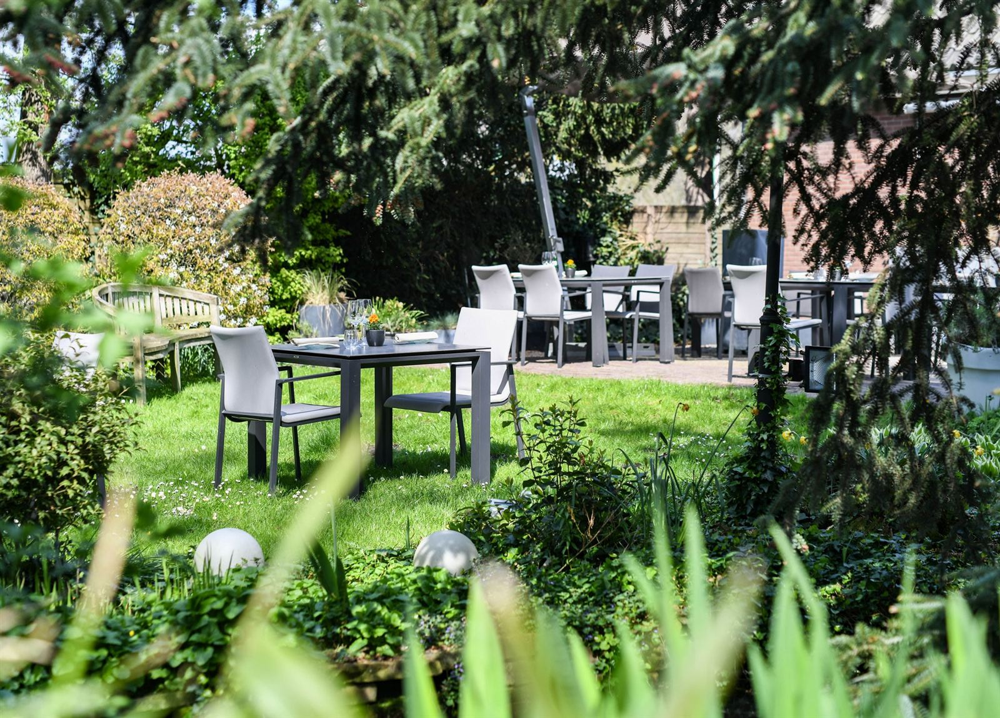

Trouwen
Een unieke trouwlocatie midden in het Groene Hart. Lunchen, dineren en trouwen op één plek, met een terrastuin die in open verbinding staat met het restaurant. Vlak bij de A12 en A20, met een eigen parkeerplaats voor 40 auto's.
We lopen uw dag samen door en maken een voorstel op maat. Informatie krijgt u het liefst telefonisch.
Bel 0182 616 101